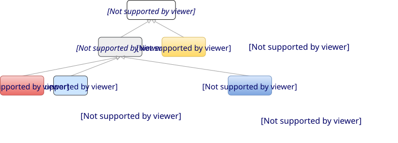

Data Bindings
Expressions in the openEHR Expression Language contain variables, which may be bound to entities in a data context. Each binding connects a symbolic variable to a data source or target in the data context.
Binding Model
The model of binding of a symbolic variable in an expression to an external entity varies, depending on specifics of system architecture. The taxonomy shown below illustrates the various forms of context that are assumed to exist. There are two essential types: execution context and content context. The first corresponds to obtaining the required data item from the current execution context, either via an API call, running a query, or interactive, i.e. via an application.

For variables declared as in and in_out in the EL text, in addition to binding targets, it is may be important to state the data quality, typically at least currency i.e. how recent the data must be to be valid. In the various types of binding, data quality may be specified in different ways. For example, for the content context type, data currency of the data is assumed (i.e. not stated). In the API call case, it may be explicitly specified, whilst in the query case, it will normally be specified within the query e.g. by means of a WHERE clause expression that references a relevant time-related meta-data item.
Another aspect of data quality is when a bound variable is sampled from its external context with respect to the execution of rules or expressions mentioning it. The default is that it is sampled once at the start of execution of a rule set containing expressions that mention the variable, i.e. at the point of parsing the context definition. However if a rule set is repeatedly evaluated, some variables may require sampling in real time, whereas others might only need to be sampled once, or less frequently. For example, for a rule set that is executed every minute, patient vital signs variables usually need to be sampled each time, whereas a variable like patient weight need only be sampled once per day.
In a data context definition, bindings of the various concrete types are stated. Within each type, the individual variable bindings are expressed with repect to an index context, which varies depending on the binding type. The general structure of a data bindings definition is as follows.
data_bindings
content_bindings
index_context_id
var_name
binding_definition
var_name
binding_definition
api_bindings
index_context_id
var_name
binding_definition
query_bindings
index_context_id
var_name
binding_definition
interactive_bindings
index_context_id
var_name
binding_definition
The binding_definition elements are data structures whose contents instantiate the model of each kind of binding. In the examples below, these are shown in ODIN syntax.
Content Binding
A content context corresponds to data assumed to be available within a larger data entity such as a document or other structure, being the result of a prior retrieval or data creation. In this case i.e. the variable is bound to a data item within the content structure, identified by a path or identifier.
Binding of a variable to a content context is done by mapping the variable to an item within the context, such as an openEHR archetype or template, as shown below.
data_bindings
content_bindings = <
["openEHR-EHR-COMPOSITION.encounter.v1"] = <
["date_initial_onset"] = <
target = <"/data[id2]/items[id3]/value[id35]/value">
>
>
>Both input (i.e. 'read') and output (i.e. 'write') variables can be mapped, as per the following that shows the mappings of the variables $body_weight, $height and $body_mass_index used in examples above. A writable (i.e. out) variable such as body_mass_index may be assigned to, and that part of the processing of such an assignment statement may be to write the result into the binding target.
data_context
content_bindings = <
["openEHR-EHR-OBSERVATION.body_measurements.v1"] = <
["body_weight"] = <
target = <"/data/events[id3]/data/items[id5]/value/magnitude">
>
["height"] = <
target = <"/data/events[id3]/data/items[id6]/value/magnitude">
>
>
["openEHR-EHR-OBSERVATION.body_mass_index.v1"] = <
["body_mass_index"] = <
target = <"/data/events[id3]/data/items[id5]/value/magnitude">
>
>
>API Call Binding
A binding to an API call is used when the required value can be obtained through such a call in a defined interface. The following shows how the value for the variable systolic_bp is obtained from the API call vital_sign ($ehr_id, "systolic_pressure"), that must have been measured in the last 1 hour. In this case, the index context is the system identifier, https://oncology.health.org/cdr/ in the example.
data_bindings
api_bindings = <
["https://oncology.health.org/cdr/"] = <
["systolic_bp"] = <
call_name = <"vital_sign">,
parameters = <
[1] = <"$ehr_id">
[2] = <"systolic_pressure">
>,
currency = <P1h>
>
>
>TBD: need to codify REST URI flavour of doing this.
Query Binding
A common special case of an API call is when the call is to executure a query, either stored or ad hoc. In this case, the API call name doesn’t change, and either an id (stored query case) or the text of a query is supplied. In this case, the parameters states the substitutable parameter values to be used in the query when executed, where each such value replaces a named parameter, assumed to be of the form '$param', with a provided value.
data_context
query_bindings = <
["https://oncology.health.org/cdr/"] = <
["systolic_bp"] = <
query_id = <"vital_signs_basic">,
parameters = <
["$type"] = <"'systolic_pressure'">
>
>
>
>The following example shows how a Boolean variable is_diabetic is populated from a stored query has_diagnosis that takes a SNOMED CT constraint expression as an argument.
data_bindings
query_bindings = <
["https://oncology.health.org/cdr/"] = <
["is_diabetic"] = <
query_id = <"has_diagnosis">,
parameters = <
["$dx_expr"] = <"'<<[snomed_ct::1234567]'">
>
>
>
>Interactive Binding
Rather than obtaining a data value from and API or query, it may be obtained interactively. Various parameters may apply here, as shown in the following example. Here, the index context is an application name. The special name "default" means that the identity of the application or other interactive method is determined by the enclosing context, e.g. it may be the current application or a generic decision support UI.
data_bindings
interactive_bindings = <
["default"] = <
["is_diabetic"] = <
visual_control_type = <"boolean">,
prompt = <"is_diabetic_prompt">,
>
>
>